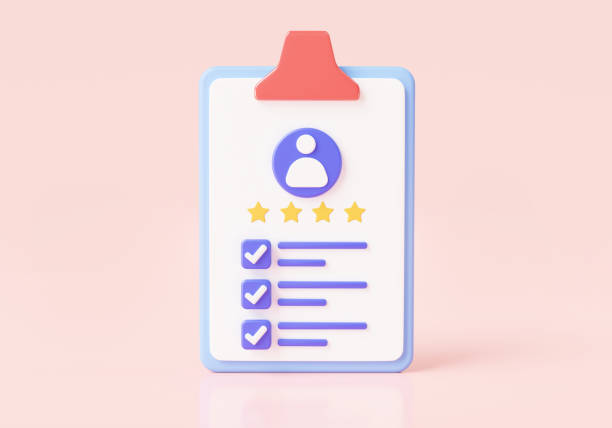

Skill
- Communication
- Leadership
- Teamwork
- Problem Solving
- Time Management
- C
- Java
- HTML
- CSS
- JavaScript
- Node.JS
- MongoDB
- Machine Learning
- pandas , Scikit learn , Matplotlib
- SQL
B.Tech(CSE) 12th (CBSE) 10th(CBSE)
Seeking a beginner role to enhance and explore my technical knowledge gained at Uttarakhand technical University in the last three years. I hold a B.Tech degree from Amrapali Institute of Technology and Science and won the quiz challenge held at the campus. Graduation
Grade: 80%
Amrapali Institute of Technology and ScienceSecondary Schooling
Grade: 86.8%
The Masters Senior Secondary SchoolHigh School
Grade: 81.6%
The Masters Senior Secondary School
Looking to utilize my technology and leadership skills in an esteemed organization. Well versed with research-oriented marketing abilities and product analysis. Tech-savvy and a fast learner with innate communication skills and natural curiosity for product marketing.
Email: joshisakshi826@gmail.com
Contact Number: 1234567890